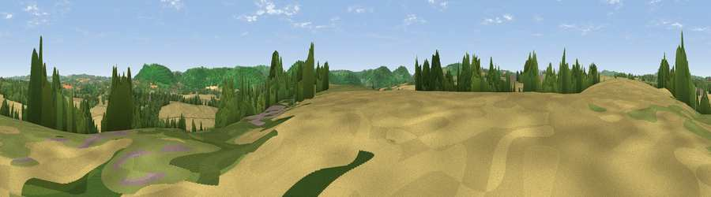

Viewpoint near Goodrich
#22482 in England · top 50% of its area beats it · near Goodrich · access?Where it is
The exact computed spot (SO 56125 21325). Click the marker for map links.
Public access: no public right of way or access land is recorded at this exact spot — it may be on private land. Computed from Natural England's CRoW access layer and OpenStreetMap rights of way — not the legal definitive map. Always verify locally.
The view, rendered

A 360° render of this exact spot computed from the terrain model, tree cover and land cover — summer colours, afternoon light, calibrated against photographs of famous viewpoints. Real trees, hedges and buildings will differ in detail.
The panorama
Grey silhouette: terrain skyline in each direction (720 bearings, Earth curvature and refraction included). Dashed green: skyline with trees (+15 m) and buildings (+8 m) as obstacles. Blue strip: how far the ground is visible on each bearing.
Where the view opens
Wedge length = distance to the farthest visible ground on that bearing (vegetation-aware). Rings at 10, 25 and 50 km.
What fills the view
40% cropland · 34% woodland · 24% grassland · 2% built-up ·
Angular shares of the visible panorama (visual magnitude), not map area. Landscape diversity 0.52 (0–1 Shannon).
Key numbers
More beautiful places nearby
The staircase of upgrades: each row has a higher view potential than everything closer. Driving times are estimates from straight-line distance, calibrated against real road routing — check an actual route before setting out.
| Place | Direction | Drive | Score |
|---|---|---|---|
| Viewpoint near Goodrich | SE · 1 km | ~3 min | 53.3 |
| Viewpoint near Walford | SE · 3 km | ~8 min | 67.5 |
| Viewpoint near Goodrich | SSE · 3 km | ~8 min | 74.0 |
| Viewpoint near Coughton | ENE · 4 km | ~9 min | 74.2 |
| Chase Wood Hill | ENE · 4 km | ~10 min | 77.6 |
| Viewpoint near Orcop Hill | NW · 11 km | ~21 min | 79.9 |
| Viewpoint near Orcop Hill | NW · 12 km | ~22 min | 80.7 |
| Garway Hill | WNW · 13 km | ~24 min | 84.6 |
51.88874, -2.63892 · source: screening · position refined by local search. Computed location — check access rights before visiting.